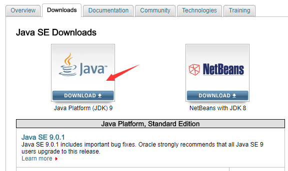
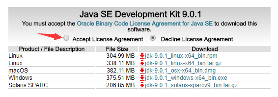
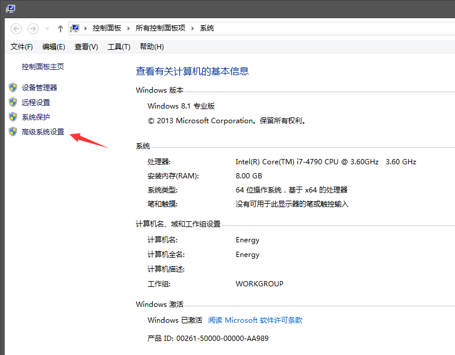
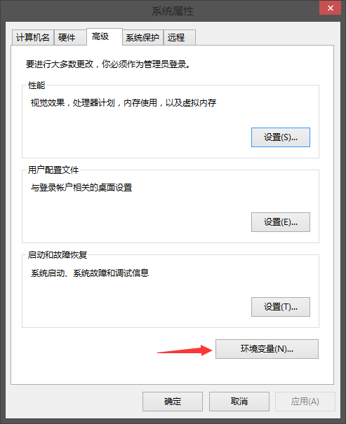
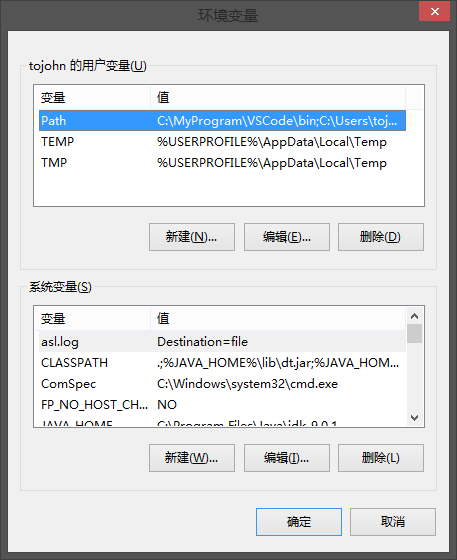
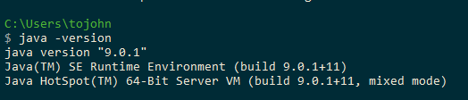

以安装 Java SE 版本为例 , 先去官网下载 SDK :
http://www.oracle.com/technetwork/java/javase/downloads/index.html


下载后 JDK 的安装根据提示默认进行 , 安装 JDK 的时候也会默认安装 JRE
安装过程中可以自定义安装目录等信息 , 例如我们选择安装目录为 C:\Program Files\Java\jdk-9.0.1
安装完成后 , 右击 我的电脑 , 点击 属性 , 选择 高级系统设置

选择 高级 选项卡 , 点击 环境变量

出现如下界面 :

Java 1.9 版本在下面的 系统变量 中设置 4 项属性 , JAVA_HOME , JRE_HOME , PATH , CLASSPATH (大小写无所谓) , 若已存在则点击 编辑 , 不存在则点击 新建
变量设置参数如下 :
变量名 : JAVA_HOME , 变量值 : C:\Program Files\Java\jdk-9.0.1
变量名 : JRE_HOME , 变量值 : C:\Program Files\Java\jre-9.0.1
变量名 : CLASSPATH , 变量值 : .;%JAVA_HOME%\lib;%JRE_HOME%\lib
变量名 : Path , 变量值 : .;%JAVA_HOME%\bin;%JRE_HOME%\bin
Java 1.8 及以前版本变量设置如下 :
变量名 : JAVA_HOME , 变量值 : C:\Program Files (x86)\Java\jdk1.8.0_91
变量名 : CLASSPATH , 变量值 : .;%JAVA_HOME%\lib\dt.jar;%JAVA_HOME%\lib\tools.jar;
变量名 : Path , 变量值 : %JAVA_HOME%\bin;%JAVA_HOME%\jre\bin;
"开始" -> "运行" , 键入"cmd"
键入命令 : java -version , java , javac 几个命令 , 出现以下信息 , 说明环境变量配置成功 :
